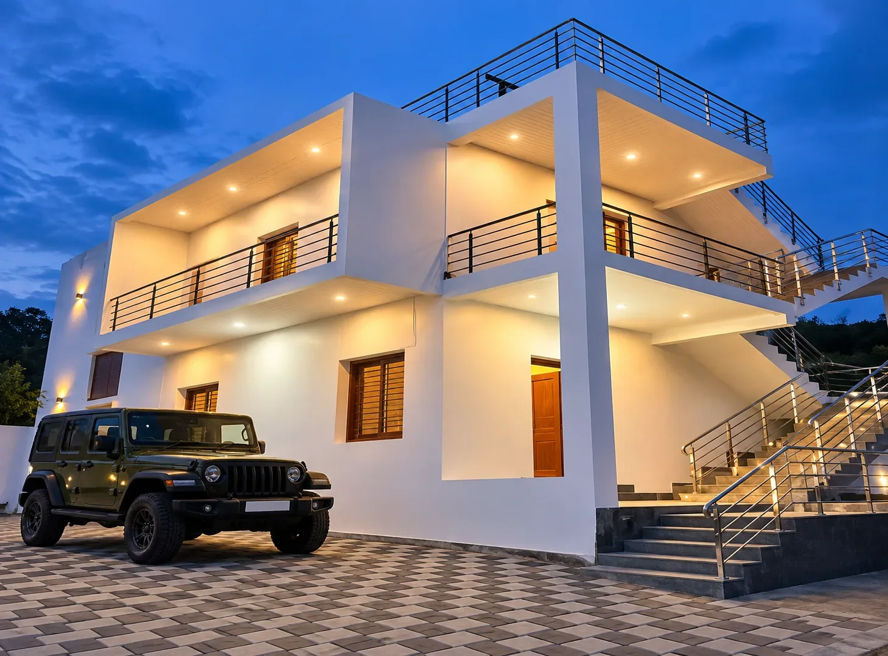
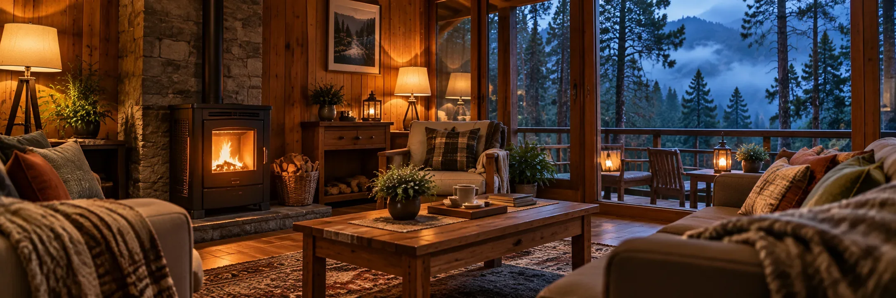
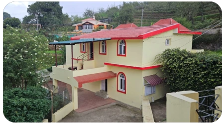
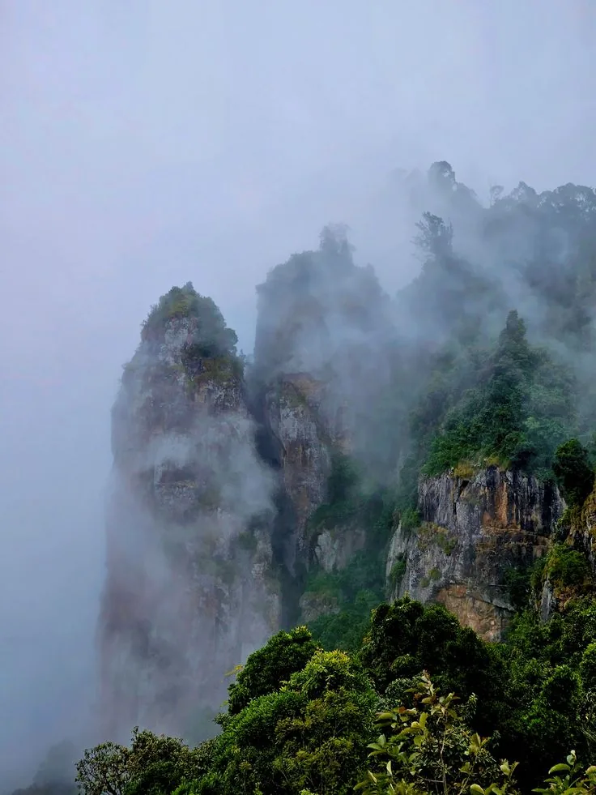

Day 1
Day 1Arrival & Lake Sightseeing
- Pickup and hotel check-in
- Kodaikanal Lake & Bryant Park
- Coaker's Walk and valley viewpoints
From ₹XX,XXX per couple · Get a quote
A look at what each day and night of a Kodaikanal trip feels like.
Day 1 Day 2
Day 2 Day 3
Day 3 Night 1
Night 1
Night 2
Night 3Stops and timings follow our 1, 2 and 3 day packages and are confirmed against travel time, weather and attraction timings. *Berijam Lake needs a forest permit with limited daily entries.
Everything bundled into one booking.
Kodaikanal Lake Coaker's WalkPillar RocksBryant Park
Coaker's WalkPillar RocksBryant Park Guna Caves
Guna Caves Vattakanal
VattakanalOrder can change with weather and traffic.
Order can change with weather and traffic.
Yes. Tell us what you want changed.
Starting prices by package. Final price depends on dates, stay type and vehicle.
| Package | Basis | Starting from |
|---|---|---|
| 1 Day Tour | 1 night / 1 day, per couple | ₹XX,XXX |
| 2 Days / 1 Night | per couple | ₹XX,XXX |
| 3 Days / 2 Nights | per couple | ₹XX,XXX |
| Honeymoon (3N/4D) | per couple | ₹XX,XXX |
| Family Package | per family | ₹XX,XXX |
| Group Package | per person, 8+ travellers | ₹XX,XXX |
Pick a duration or theme. Every package can be customised.
1 DayQuick getaway covering the main viewpoints and the lake.
2D / 1NA relaxed pace with time to enjoy the misty hills.
 3D / 2N
3D / 2NClassic sights plus a few quieter corners.
HoneymoonPrivate cottage stay, candlelight dinner and couple sightseeing.
 Family
FamilyComfortable stay, spacious cab and an easy-paced route for all ages.

Group 8+Tempo traveller and group stay for friends, colleges and teams.

CustomTell us your dates, group and interests and we will build the route around you.
The same family has hosted travellers in Kodaikanal for over a decade.
Drivers who know every ghat road and viewpoint.
Every itinerary can be shaped around your dates and budget.
Enquiries usually get a firm quote within a few hours.
500+
Trips Arranged
12 yrs
Family-Run Hosting
100%
Customisable
Watch trips and stays from our YouTube channel.
Cottages Kodaikanal, Near Zion School Junction, MM Street, Lawsghat Road, Kodaikanal - 624101.
Pick your city for pickup and drop.
We booked a family cottage for five of us and it never felt cramped. Staff arranged everything from bonfire wood to breakfast timing.
Traveled from Bengaluru for a college reunion — the group stay cottage fit all ten of us with room to spare.
Our honeymoon stay had exactly the privacy we wanted — hills outside the window, a fireplace for the cold evenings.
Peak seasons are April–May and December–January.
Weather shifts quickly in the hills, even in summer.
Dolphin's Nose, Moir Point and Coaker's Walk reward it.
The drive up takes time; plan to arrive before evening.
Homemade chocolates and hot soups at Coaker's Walk.
Nature, adventure or a quiet break: we tune the route.
Pick a duration and theme.
Dates, group size and pickup point.
We check availability and confirm pricing.
Arrive, check in and explore.
Read our full Terms & Conditions.
It depends on your time: 1 day for a quick trip, 2-3 days for a relaxed pace, Honeymoon for couples, and Group for 8 or more travellers.
Accommodation, a private cab for pickup, sightseeing and drop, and breakfast and dinner on most packages. Exact inclusions are confirmed at booking.
Yes. Stay type, vehicle, dates, pickup point and activities can all be adjusted.
Madurai, Coimbatore, Dindigul, Palani and Kodai Road are our regular pickups. Chennai and Bangalore pickups can be arranged on request.
Price depends on duration, stay type, vehicle, season and group size. Share your details for a firm quote, usually within a few hours.
Year-round, with April-May and December-January the busiest. Book early for those months.
Choose a package, share dates and group size, confirm stay and cab, then travel. No long back-and-forth.
Cancellation and rescheduling terms are shared and confirmed at booking, before any payment.
Share your dates and group size. We will hold the stay, cab and route together and send a firm quote.